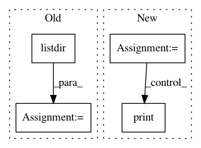

39e8146b3d7354d1e34cd41a4eca19e70c053a4a,dipy/stats/analysis.py,,bundle_analysis,#Any#Any#Any#Any#Any#Any#Any#Any#,169
Before Change
_, indx = cKDTree(centroids.data, 1,
copy_data=True).query(bundles.data, k=1)
metric_files_names = os.listdir(metric_folder)
_, affine = load_nifti(os.path.join(metric_folder, "fa.nii.gz"))
affine_r = np.linalg.inv(affine)
transformed_orig_bundles = transform_streamlines(orig_bundles,
After Change
copy_data=True).query(bundles.data, k=1)
//metric_files_names = os.listdir(metric_folder)
metric_files_names = ["fa.nii.gz", "md.nii.gz", "csd_peaks.pam5"]
_, affine = load_nifti(os.path.join(metric_folder, "fa.nii.gz"))
affine_r = np.linalg.inv(affine)
transformed_orig_bundles = transform_streamlines(orig_bundles,
affine_r)
for mn in range(0, len(metric_files_names)):
ind = np.array(indx)
fm = metric_files_names[mn][:-7]
bm = mb[io][14:-4]
print("bm = ", bm)
dt = dict()
metric_name = os.path.join(metric_folder,
metric_files_names[mn])
In pattern: SUPERPATTERN
Frequency: 3
Non-data size: 4
Instances
Project Name: nipy/dipy
Commit Name: 39e8146b3d7354d1e34cd41a4eca19e70c053a4a
Time: 2019-08-05
Author: bramshq@gmail.com
File Name: dipy/stats/analysis.py
Class Name:
Method Name: bundle_analysis
Project Name: AllenCellModeling/pytorch_fnet
Commit Name: 2b4dfea5674a6b6b4d6556d7546a387f41f947fa
Time: 2017-11-10
Author: chek.o@outlook.com
File Name: tools/colorize_tifs.py
Class Name:
Method Name:
Project Name: batra-mlp-lab/visdial-challenge-starter-pytorch
Commit Name: 81a5691526015b88f252e22a42c123720ee30c97
Time: 2018-12-25
Author: karandesai281196@gmail.com
File Name: data/extract_bottomup.py
Class Name:
Method Name: main